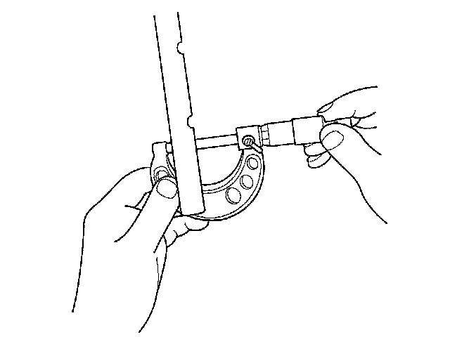
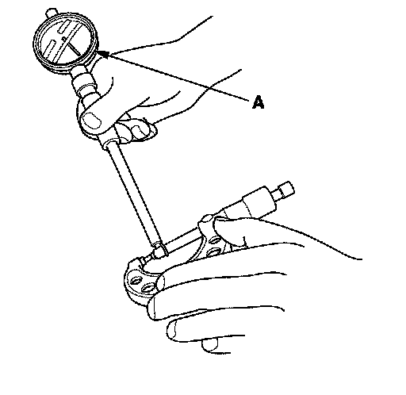
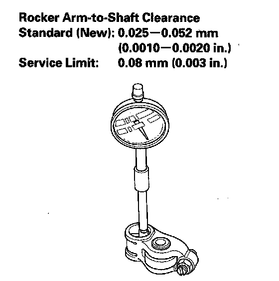
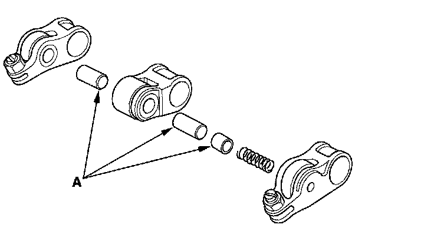

Rocker Arm and Shaft Inspection
Rocker Arm and Shaft Inspection1. Remove the rocker arm assembly.
2. Disassemble the rocker arm assembly.
3. Measure the diameter of the shaft at the first rocker location.

4. Zero the gauge (A) to the shaft diameter.

5. Measure the inside diameter of the rocker arm, and check it for an out-of-round condition.

6. Repeat for all rocker arms and both shafts. If the clearance is beyond the service limit, replace the rocker shaft and all out of service limit rocker arms. If any VTEC rocker arm needs replacement, replace the rocker arms (primary, mid, and secondary), as a set.
7. Inspect the rocker arm pistons (A). Push each piston manually. If it does not move smoothly, replace the rocker arm set.
NOTE: Apply oil to the pistons when reassembling.

8. Install the rocker arm assembly.